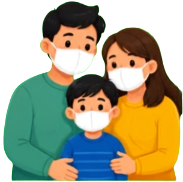
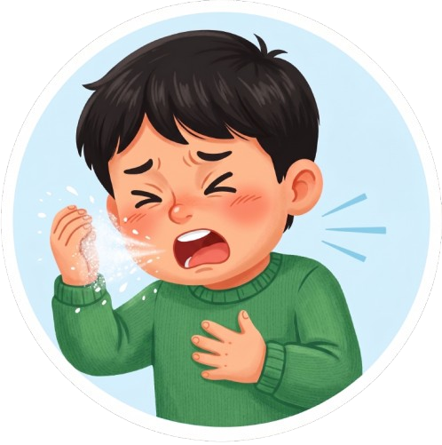
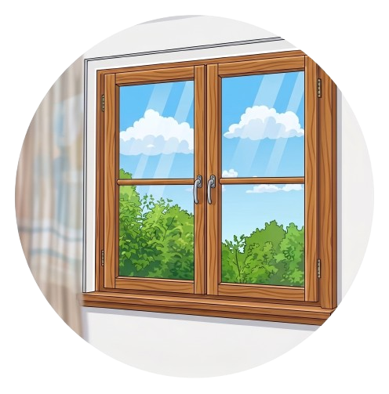
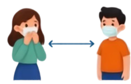
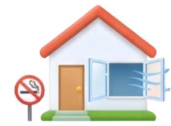
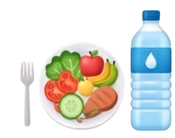
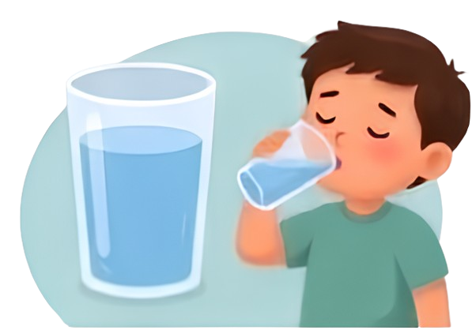
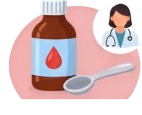
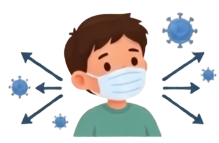
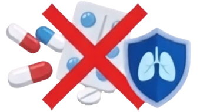

Lawan ISPA
Kenali ISPA, Lindungi Keluarga!
ISPA (Infeksi Saluran Pernapasan Akut) adalah infeksi yang menyerang salah satu bagian atau lebih dari saluran napas, mulai dari hidung hingga kantung paru-paru.

Bagaimana ISPA Menyebar?
Ketahui penyebabnya agar bisa menghindarinya.
Virus
Influenza, Coronavirus, RSV
01Bakteri
Streptococcus, Pneumococcus
02Lingkungan
Asap rokok, polusi, debu
03Cara Penularan
Percikan air liur (droplet) saat batuk atau bersin.

Menyentuh benda yang terkena virus, lalu menyentuh wajah.

Ruangan tertutup dengan udara yang tidak lancar.
Tanda dan Gejala ISPA
Gejala Ringan
- Batuk.
- Pilek.
- Demam ringan.
- Hidung tersumbat.
- Sakit tenggorokan.
Gejala Sedang
- Demam tinggi.
- Napas cepat.
- Tenggorokan merah.
- Nyeri dada.
- Suara napas mengorok.
Gejala Berat
- Sesak napas.
- Bibir membiru.
- Penurunan kesadaran.
- Tarikan dinding dada ke dalam.
Langkah-Langkah Pencegahan ISPA
Higiene Tangan & Pernapasan
- Cuci tangan menggunakan sabun dan air mengalir.
- Terapkan etika batuk dan bersin dengan menutup mulut/hidung (tisu/siku).

Proteksi & Jarak Sosial
- Gunakan masker ketika sedang sakit atau di lingkungan berdebu.
- Hindari kontak dengan orang yang bergejala ISPA.

Lingkungan Sehat
- Hindari paparan asap rokok.
- Menjaga kebersihan rumah & ventilasi berfungsi baik.

Nutrisi & Hidrasi
- Konsumsi makanan bergizi seimbang.
- Perbanyak minum air putih.
Pola Hidup Bugar
- Istirahat yang cukup.
- Rutin berolahraga.
Penanganan Awal ISPA
Istirahat Cukup
Istirahat yang cukup untuk pemulihan.

Hidrasi Maksimal
Perbanyak minum air putih agar tubuh terhidrasi.
Nutrisi Seimbang
Konsumsi makanan bergizi seimbang untuk imun tubuh.

Obat Penurun Demam
Gunakan obat penurun demam sesuai anjuran tenaga kesehatan.

Gunakan Masker
Gunakan masker agar tidak menularkan penyakit kepada orang lain.

Peringatan Penting
Jangan menggunakan antibiotik tanpa anjuran tenaga kesehatan karena sebagian besar ISPA disebabkan oleh virus.
Deteksi Gejala
Periksa kondisi kesehatan pernapasan Anda secara mandiri untuk mendapatkan rekomendasi penanganan awal yang tepat.
🩺 Pilih Gejala yang Dirasakan:
6 Langkah Cuci Tangan WHO
Langkah 1: Telapak Tangan
Gosokkan kedua telapak tangan dengan memutar searah jarum jam secara merata dengan sabun.